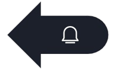
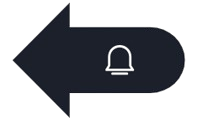

AI Algorithm For Wildlife Monitoring
- Image Recognition :-
⇒ AI looks at photos and videos from cameras placed in forests and
identifies animals automatically.
⇒ It can recognize different species, count them, and track their
movements.

- Sound Analysis :-
⇒ AI listens to animal sounds from forests or oceans and identifies
which animals are present.
⇒ This helps track rare and hidden animals without disturbing them.
📸
- Drone & Satellite Monitoring :-️
⇒ AI analyzes images from drones and satellites to spot animal groups,
habitat loss, and illegal activities like deforestation or poaching.
Next Page